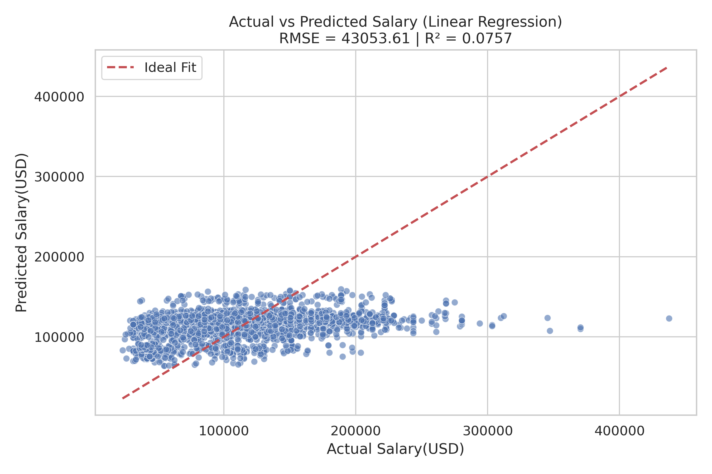

import pandas as pdimport plotly.express as pximport plotly.io as piopio.renderers.default ="vscode"from pyspark.sql import SparkSessionfrom pyspark.sql.functions import split, explode, col, regexp_replace, transform, isnanspark = SparkSession.builder.appName("LightcastCleanedData").getOrCreate()# Reload processed datadf_cleaned = spark.read.option("header", "true").option("inferSchema", "true").option("multiLine","true").csv("data/lightcast_cleaned.csv")# View data structures and samplesdf_cleaned.show(5)
1 K-Means
1.1 Build model and compute SSE
Here we run a clustering analysis on our cleaned dataset to explore how different job roles might naturally group together based on salary, employment type, and a few categorical factors like job duration, education level, remote options, and state. First, we convert the numeric fields to the right type, and encode the categorical ones so the model can understand them. Then we bring everything together into a single feature set, standardize it to keep things fair across scales, and try out different numbers of clusters using K-Means. For each value of k, we fit the model and record the SSE, which gives us a sense of how tight the clusters are. Finally, we plot those values to create an Elbow chart, which helps us visually decide the most reasonable number of clusters to use moving forward.
Code
from pyspark.ml.clustering import KMeansfrom pyspark.ml.feature import VectorAssembler, StandardScaler, StringIndexer, OneHotEncoderfrom pyspark.ml import Pipelinefrom pyspark.ml.evaluation import ClusteringEvaluatorfrom pyspark.sql.functions import colfrom pyspark.sql.types import DoubleTypeimport matplotlib.pyplot as plt# Select fields for clusteringnumeric_cols = ["DURATION", "SALARY"]categorical_cols = ["MIN_EDULEVELS_NAME", "EMPLOYMENT_TYPE_NAME", "REMOTE_TYPE_NAME", "STATE_NAME"]df_kmeans = df_cleaned.select(numeric_cols + categorical_cols).dropna()# Data type conversionfor col_name in numeric_cols: df_kmeans = df_kmeans.withColumn(col_name, col(col_name).cast(DoubleType()))# Handling categorical variablesindexers = [StringIndexer(inputCol=c, outputCol=f"{c}_idx", handleInvalid='skip') for c in categorical_cols]encoders = [OneHotEncoder(inputCol=f"{c}_idx", outputCol=f"{c}_vec") for c in categorical_cols]encoded_categorical = [f"{c}_vec"for c in categorical_cols]# Characteristic bindingassembler = VectorAssembler( inputCols=numeric_cols + encoded_categorical, outputCol="raw_features")# Standardizationscaler = StandardScaler(inputCol="raw_features", outputCol="features", withStd=True, withMean=True)# Iterate over different values of k and compute SSEcost = [] for k inrange(2, 11): kmeans = KMeans(k=k, seed=688, featuresCol="features") pipeline = Pipeline(stages=indexers + encoders + [assembler, scaler, kmeans])# fit model model_kmeans = pipeline.fit(df_kmeans)# Get K-Means clustering model stage kmeans_data = model_kmeans.stages[-1] sse = kmeans_data.summary.trainingCost cost.append((k, sse)) print(f"k = {k}, SSE = {sse:.2f}")# Plotting the Elbow Chartk_vals, sse_vals =zip(*cost) plt.figure(figsize=(8, 5))plt.plot(k_vals, sse_vals, marker='o')plt.xlabel("Number of Clusters (k)")plt.ylabel("SSE (Sum of Squared Errors)")plt.title("Elbow Method - Optimal k via SSE")plt.grid(True)plt.tight_layout()plt.savefig("images/elbow.png", dpi=300, bbox_inches='tight')plt.show()
Elbow Chart
Looking at this elbow chart, we went with k = 3 instead of k = 9, even though the chart shows k = 9 has a lower error rate. K = 9 would give us too many clusters to make sense of practically. It’s mathematically better with lower error, but having 9 different groups would overcomplicate our analysis and might not add meaningful insights. With k = 3, we get a simpler model that’s easier to interpret and explain to stakeholders.
1.2 Cluster validation
We go on capturing the cluster each data point falls into. We focus on comparing the resulting clusters with the actual employment type to see how well our unsupervised model aligns with that real-world label. We encode the employment types into numeric labels using LabelEncoder, and then use two metrics, Normalized Mutual Information (NMI) and Adjusted Rand Index (ARI), to quantify the similarity between our clusters and the actual labels. These scores give us a sense of whether the model found meaningful groupings or just jumbled everything together, while a higher score means better alignment. So this helps us validate how useful the clustering might actually be.
After clustering, we wanted to get a clearer, more intuitive sense of what the clusters actually look like. So we built a bunch of scatter plots to visually explore the patterns. We pull each key variables, job duration, education level, employment type, remote status, and state, then compare them against salary while highlighting different clusters one at a time. For categorical variables, we do a bit of behind-the-scenes magic to convert them into numbers for plotting, and we use a jitter function to keep overlapping points from stacking on top of each other. Each row in the grid of plots represents a variable, and each column highlights a different cluster, making it easier to spot what sets one group apart from the others. This helps us interpret the clusters more meaningfully—like whether one cluster tends to include higher salaries or is dominated by remote jobs.
Code
import matplotlib.pyplot as pltimport seaborn as snsimport numpy as np# Preparing datapandas_df = df_kmeans.select("DURATION", "SALARY", "MIN_EDULEVELS_NAME", "EMPLOYMENT_TYPE_NAME", "REMOTE_TYPE_NAME", "STATE_NAME", "cluster").toPandas()# Setting variables and cluster IDsvars_to_plot = ["DURATION", "MIN_EDULEVELS_NAME", "EMPLOYMENT_TYPE_NAME", "REMOTE_TYPE_NAME", "STATE_NAME"]highlight_clusters = [0, 1, 2] # Each row shows the highlighting of three clustersnum_clusters = pandas_df["cluster"].nunique()# Setting the contrasting colorpalette = sns.color_palette("Set1", n_colors=num_clusters)color_map = {cid: palette[cid] for cid inrange(num_clusters)}def jitter(arr, strength=0.2):return arr + np.random.uniform(-strength, strength, size=arr.shape)# Create the plotfig, axes = plt.subplots(len(vars_to_plot), len(highlight_clusters), figsize=(38, 38)) # Increase image size to prevent overlapaxes = axes.reshape(len(vars_to_plot), len(highlight_clusters))for row_idx, var inenumerate(vars_to_plot): is_numeric = np.issubdtype(pandas_df[var].dtype, np.number)# Prepare the mapping in advance if it's category variableifnot is_numeric: cat_series = pandas_df[var].astype("category") categories =dict(enumerate(cat_series.cat.categories))for col_idx, highlight_cid inenumerate(highlight_clusters): ax = axes[row_idx, col_idx]for cid inrange(num_clusters): subset = pandas_df[pandas_df["cluster"] == cid] x = subset[var] if is_numeric else jitter(subset[var].astype("category").cat.codes) # Convert category variables to category type. Each category value is then mapped to a unique integer code. y = subset["SALARY"] alpha =0.05if cid != highlight_cid else0.9 zorder =2if cid == highlight_cid else1 ax.scatter(x, y, color=color_map[cid], alpha=alpha, edgecolor='k', s=40, zorder=zorder) ax.set_title(f"{var} vs SALARY\nHighlight: Cluster {highlight_cid}", fontsize=11) ax.set_xlabel(var)if col_idx ==0: ax.set_ylabel("SALARY")else: ax.set_ylabel("")# Set x-axis labels to category namesifnot is_numeric: ax.set_xticks(list(categories.keys())) ax.set_xticklabels(list(categories.values()), rotation=45, ha='right')# Overall layoutplt.tight_layout()plt.savefig("images/kmeans.png", dpi=300, bbox_inches='tight')plt.show()
K-means
1.4 Separate image display
We generate individual plots for each variable we’re analyzing, one plot per variable, showing how salary relates to that variable across the different clusters. For each variable like duration, education, or remote type, we highlight each cluster one at a time (so 3 plots per variable), which really helps us zoom in and understand what makes each cluster unique in relation to salary. And we save all these charts in the image folder.
1.4.1 K-Means of Duration
Code
import os# Create a save directorysave_dir ="images/kmeans"os.makedirs(save_dir, exist_ok=True)for row_idx, var inenumerate(vars_to_plot): is_numeric = np.issubdtype(pandas_df[var].dtype, np.number)ifnot is_numeric: cat_series = pandas_df[var].astype("category") categories =dict(enumerate(cat_series.cat.categories)) fig, axes = plt.subplots(3, 1, figsize=(20, 20))for col_idx, highlight_cid inenumerate(highlight_clusters): ax = axes[col_idx]for cid inrange(num_clusters): subset = pandas_df[pandas_df["cluster"] == cid] x = subset[var] if is_numeric else jitter(subset[var].astype("category").cat.codes) y = subset["SALARY"] alpha =0.03if cid != highlight_cid else0.9 zorder =2if cid == highlight_cid else1 ax.scatter(x, y, color=color_map[cid], alpha=alpha, edgecolor='k', s=40, zorder=zorder) ax.set_title(f"{var} vs SALARY\nHighlight: Cluster {highlight_cid}", fontsize=12) ax.set_xlabel(var)if col_idx ==0: ax.set_ylabel("SALARY")else: ax.set_ylabel("")ifnot is_numeric: ax.set_xticks(list(categories.keys())) ax.set_xticklabels(list(categories.values()), rotation=45, ha='right') plt.tight_layout()# Show and save figures save_path = os.path.join(save_dir, f"kmeans_highlight_{row_idx}_{var}.png") plt.savefig(save_path, dpi=300, bbox_inches='tight') plt.show()
K-means DURATION
These three scatterplots show the scatterplot of job duration versus salary for each of the three clusters. It seems to be a general trend that as job duration exceeds the 60-80 month mark, the salary distribution becomes more diverse and possibly lower. This suggests that longer positions do not necessarily guarantee higher salaries. A notable feature is the vertical concentration of data points around certain duration values, particularly at the 60-month mark, which may represent common contract durations or career milestone points where people change roles. The highest salaries (up to $500,000) are mostly found in roles with durations of less than 60 months, suggesting that some short- to medium-term roles may be particularly lucrative.
For job seekers, these results suggest that maximizing pay may actually require changing positions strategically every 3-5 years rather than holding a position for a long period of time. The data suggests that very long tenures of more than 80 months provide diminishing pay returns. Candidates may want to focus on industries or positions in higher-paying clusters, especially those with higher pay in the early and mid-term tenure ranges. Additionally, five years appears to be a critical point in career evaluation to either negotiate a significant salary increase or consider job hopping to maintain salary momentum.
1.4.2 K-Means of Education Levels
K-means MIN_EDULEVELS_NAME
These are scatter plots comparing education levels and salary across the three clusters, and we can see distinct patterns in how education relates to compensation within each group.
In Cluster 0 (top plot), there’s a wide distribution of salaries across all education levels. Master’s degree holders show the highest salary ceiling, with some earning up to $500,000, though most fall between $50,000-$250,000. Associate degree holders surprisingly show strong earnings, often comparable to those with Master’s degrees. Bachelor’s degree holders and high school graduates show somewhat lower median salaries, which challenges traditional assumptions about education returns.
Cluster 1 (middle plot) shows a different pattern, with Bachelor’s degree holders and those without formal education labels being particularly prevalent. The salary range is more compressed, typically between $50,000-$200,000, with fewer high outliers. This cluster might represent industries or roles where specific skills matter more than degree level.
Cluster 2 (bottom plot) shows a striking concentration of Associate degree holders with competitive salaries between $50,000-$250,000, with some reaching close to $300,000. This suggests this cluster represents a segment of the job market where specialized two-year programs are highly valued, possibly in technical or healthcare fields.
For job seekers, these findings suggest that the value of different education levels varies significantly depending on which job segment you’re targeting. Associate degrees appear particularly valuable in Cluster 2, while advanced degrees show the highest potential in Cluster 0. Rather than pursuing higher education indiscriminately, job seekers might benefit from identifying which cluster aligns with their career goals and then obtaining the education level that shows the strongest returns within that specific segment of the job market.
1.4.3 K-Means of Employment types
K-means EMPLOYMENT_TYPE_NAME
These scatter plots show how salary relates to employment type across three different clusters.
In Cluster 0 (top plot), full-time positions clearly dominate with the highest salary potential, including outliers reaching $500,000. Full-time roles show a wide salary range from around $50,000 to $300,000, with much higher median and maximum values than other employment types. Part-time positions (< 32 hours) and part-time/full-time flexible roles show similar salary distributions but with notably lower ceilings, mostly staying below $200,000, though a few outliers exist.
Cluster 1 (middle plot) is predominantly composed of full-time positions, with fewer data points in the part-time categories. The full-time positions in this cluster show a more compressed salary range, typically between $50,000 and $200,000. There are significantly fewer part-time workers represented in this cluster, suggesting it might represent industries or roles where full-time employment is standard.
Cluster 2 (bottom plot) again shows a strong concentration of full-time workers, but with a distinctive salary pattern. The full-time positions here show a particularly dense concentration between $50,000 and $200,000, with some reaching near $300,000. There are very few part-time workers in this cluster, and those present show lower salaries than their full-time counterparts.
For job seekers, these findings highlight that full-time employment consistently offers the strongest salary potential across all clusters. The substantial salary gap between full-time and other employment types suggests that transitioning from part-time to full-time work could yield significant financial benefits. For those who need flexibility, it appears that part-time/full-time flexible arrangements sometimes offer slightly better compensation than strictly part-time roles.
1.4.4 K-Means of Remote types
K-means REMOTE_TYPE_NAME
Here are the relationship between remote work arrangements and salary across three distinct job market clusters.
In Cluster 0 (top plot), on-site positions show the highest salary potential, with several roles reaching $400,000-$500,000 that aren’t matched in other work arrangements. On-site roles also display the widest salary distribution, ranging from about $30,000 to $500,000. Remote positions show a similar distribution pattern but with a slightly lower ceiling, typically topping out around $300,000. Hybrid positions have the most compressed salary range and the lowest median, suggesting hybrid arrangements might be more common in moderate-paying industries or roles.
Cluster 1 (middle plot) shows a strong concentration of on-site and remote positions with fewer hybrid roles. The salary distributions are more compressed compared to Cluster 0, with most positions across all work arrangements falling between $50,000 and $200,000. Notably, remote positions in this cluster show fairly competitive compensation compared to on-site roles, suggesting this cluster might represent industries where remote work is well-established and valued.
Cluster 2 (bottom plot) also shows a predominance of on-site positions, with salary ranges typically between $50,000 and $200,000 and some reaching close to $300,000. Remote positions appear to have a slightly lower salary ceiling in this cluster, and hybrid roles are relatively uncommon, likely representing industries where physical presence is more highly valued.
For job seekers, these findings suggest that on-site positions still offer the highest salary potential overall, especially in industries represented by Cluster 0. However, remote work doesn’t necessarily mean sacrificing compensation significantly, particularly in Cluster 1 where remote salaries are quite competitive. Job seekers prioritizing work-life balance through remote arrangements might focus on sectors represented in Cluster 1, while those seeking maximum earning potential might target on-site roles in Cluster 0. Hybrid arrangements, though offering flexibility, generally show lower compensation across all clusters and might be more strategic as a negotiation point after securing a higher-paying on-site role.
1.4.5 K-Means of different states
K-means STATE_NAME
These scatter plots reveal fascinating geographical salary patterns across all U.S. states for three distinct job market clusters, showing how location influences compensation within different employment segments.
In Cluster 0 (top plot), we see considerable salary variation across states, with the highest-paying positions ($400,000-$500,000) appearing in high-cost states like California, New York, and Tennessee. States such as Colorado, Illinois, and Texas also show strong salary ranges. Most states display a wide salary distribution, typically ranging from $50,000 to $250,000, with fairly consistent median values across locations. This suggests that top-tier compensation is available in multiple regions, though the highest outliers concentrate in traditional economic centers.
Cluster 1 (middle plot) shows an interesting concentration of data points in Alabama, suggesting this cluster might represent industries or roles particularly prevalent in that state. Cluster 2 (bottom plot) shows a more scattered distribution across states, with positions typically ranging from $50,000 to $200,000. Certain states like California, Colorado, and South Carolina show stronger representations in this cluster, but with fewer extremely high-paying outliers compared to Cluster 0. The salary distributions appear somewhat more compressed, suggesting these positions may have more standardized compensation structures regardless of location.
For job seekers, these findings suggest that geographical flexibility can significantly impact earning potential, particularly for roles in Cluster 0. While high-cost-of-living states like California and New York show the highest salary ceilings, states like Colorado and Texas also offer competitive compensation in many clusters. Job seekers might strategically target positions in Cluster 0 in states with lower living costs but strong salary potential, potentially maximizing real earnings. Those constrained to specific regions should research which cluster predominates in their location and target industries and roles aligned with the cluster showing the strongest local compensation profile.
2 Multiple linear regression
2.1 Build model
We’re building a multivariate linear regression model to predict salary, by preprocessing everything carefully before the modeling step. First, we pick the features we believe are relevant, like job duration, education level, employment type, remote status, and state. Since machine learning models can’t handle raw strings, we convert all the categorical fields into numerical format using indexing and one-hot encoding. Then, we combine everything (including the duration field) into a single feature vector and standardize the scale, so each variable has a fair influence on the model. We split the data into training and testing sets, build a pipeline to keep things clean and reproducible, and train a linear regression model. Finally, we evaluate how well our model performs using R² and RMSE, giving us a solid sense of how much of the salary variance we’re capturing—and how far off we might be on average.
Code
# Multiple Linear Regressionfrom pyspark.ml.feature import VectorAssembler, StandardScaler, StringIndexer, OneHotEncoderfrom pyspark.ml.regression import LinearRegressionfrom pyspark.ml import Pipelinefrom pyspark.ml.evaluation import RegressionEvaluatorfrom pyspark.sql.types import DoubleTypefrom pyspark.sql.functions import col# Select fieldlr_df = df_cleaned.select("DURATION", "MIN_EDULEVELS_NAME", "EMPLOYMENT_TYPE_NAME", "REMOTE_TYPE_NAME", "STATE_NAME", "SALARY").dropna()# Numeric column type conversionlr_df = lr_df.withColumn("DURATION", col("DURATION").cast(DoubleType()))# Category field codescategorical_cols = ["MIN_EDULEVELS_NAME", "EMPLOYMENT_TYPE_NAME", "REMOTE_TYPE_NAME", "STATE_NAME"]indexers = [StringIndexer(inputCol=col_name, outputCol=col_name +"_IDX", handleInvalid="keep") for col_name in categorical_cols]encoders = [OneHotEncoder(inputCol=col_name +"_IDX", outputCol=col_name +"_OHE") for col_name in categorical_cols]# Feature splicingassembler = VectorAssembler( inputCols=["DURATION"] + [col +"_OHE"for col in categorical_cols], outputCol="assembled_features")# Standardizationscaler = StandardScaler(inputCol="assembled_features", outputCol="features")# Build modellr = LinearRegression(featuresCol="features", labelCol="SALARY")# Divide the training test settrain_data, test_data = lr_df.randomSplit([0.8, 0.2], seed=688)train_data = train_data.na.drop()test_data = test_data.na.drop()# Build the pipelinepipeline = Pipeline(stages=indexers + encoders + [assembler, scaler, lr])model = pipeline.fit(train_data)predictions = model.transform(test_data)# Evaluate resultevaluator_r2 = RegressionEvaluator(labelCol="SALARY", predictionCol="prediction", metricName="r2")evaluator_rmse = RegressionEvaluator(labelCol="SALARY", predictionCol="prediction", metricName="rmse")
2.2 Results and analysis
With two evaluation metrics: R² (how well the model explains salary variation) and RMSE (average prediction error), we create scatter plot is created with actual salaries on the x-axis and predicted on the y-axis, with a red dashed line representing a perfect prediction. And it helps visually assess model accuracy.
Code
pdf = predictions.select("SALARY", "prediction").toPandas()r2 = evaluator_r2.evaluate(predictions)rmse = evaluator_rmse.evaluate(predictions)import matplotlib.pyplot as pltimport seaborn as snsplt.figure(figsize=(9, 6))sns.scatterplot(x="SALARY", y="prediction", data=pdf, alpha=0.6)plt.plot([pdf.SALARY.min(), pdf.SALARY.max()], [pdf.SALARY.min(), pdf.SALARY.max()], 'r--', linewidth=2, label='Ideal Fit') plt.xlabel("Actual Salary(USD)")plt.ylabel("Predicted Salary(USD)")plt.title(f"Actual vs Predicted Salary (Linear Regression)\nRMSE = {rmse:.2f} | R² = {r2:.4f}")plt.grid(True)plt.legend()plt.tight_layout()plt.savefig("images/predicted_vs_actual.png", dpi=300)plt.show()

Predicted VS Actual
This scatter plot compares actual vs. predicted salaries using a linear regression model. The blue dots represent the predictions, while the red dashed line indicates the ideal scenario where predicted salary perfectly matches the actual salary. From the plot, we observe that most predictions are clustered in a narrow range, underestimating high salaries and overestimating lower ones. The model’s R² value of 0.0757 indicates it explains only about 7.6% of the variance in salaries, suggesting limited predictive power. The RMSE of 43053.61 further highlights the large average error in predictions. These insights imply that the model struggles to capture the complexity of salary determination and may benefit from including more relevant features, nonlinear modeling, or feature engineering.